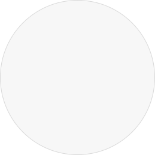

대한산악보전회(KMCS)이란?
KMCS는 산과 함께하는 우리의 일상을 하나의 살아 있는 자연 기록으로 바라보는 자연 라이프스타일 브랜드입니다.
KMCS가 주목하는 것은 ‘정상에 오르는 결과’가 아니라, 그 과정에서 이루어지는 걷기, 쉬기, 기록하기, 연결되기와 같은 일상의 작은 경험들이며각자의 속도로 자연을 마주한 경험은 기록으로 남고, 그 기록은 참여와 공감으로 이어져 하나의 산 문화로 축적됩니다.
전통적인 자연 정보 제공을 넘어, KMCS는 친근한 캐릭터와 참여형 콘텐츠를 통해 누구나 부담 없이 자연과 연결될 수 있는 방식을 제안하고,작은 실천이 모여 자연을 지키는 태도가 되고, 그 태도가 지속가능한 산의 미래로 이어지도록 설계합니다.
MISSION
산과 자연을 보호의 대상에만 머무르게 하지 않고, 사람의 일상·건강·회복과 연결된 경험의 공간으로 확장하며, 기록과 참여, 실천을 통해 지속 가능한 산의 가치를 다음 세대까지 이어가는 것입니다.
VISION
우리가
지향하는 미래는
다음과 같습니다.
참여는 선택이 아니라 자연스러운 행동이 됩니다.
산은 멀리 있는 대상이 아닌 삶의 일부가 됩니다.
자연과 사람이 함께 지속가능한 문화를 만듭니다.
대한산악보전회가 지켜가는 핵심 가치
KMCS는 자연을 지키는 행동이 일상의 경험으로 이어질 수 있도록, 4가지를 중심으로 활동합니다

01
지속
지속성
산을 보호의 대상으로 인식하며,훼손 없는 이용을 통해 장기적인 보전을 추구합니다.
02
책임
책임성
자연과 사회에 미치는 영향을 고려하여책임 있는 행동과 선택을 지향합니다.
03
참여
참여성
누구나 일상 속에서자연 보호에 참여할 수 있는 경험을 만듭니다.
04
투명
투명성
모든 과정은 명확한 기준 아래공개되고 신뢰할 수 있도록 운영됩니다.
연혁
대한산악보전회의 시작부터 현재까지 걸어온 길
2026
2026년의 연혁 설명이 들어갈 공간입니다.
연도별 내용과 이미지는 추후 반영됩니다.